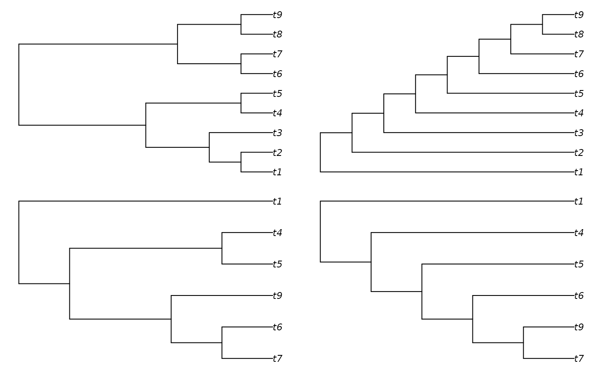

ReduceTrees() reduces trees according to the tree reduction rules of
Allen and Steel (2001)
:
Collapse identical pendant subtrees;
Compress equivalent internal chains.
Value
ReduceTrees() returns a list of two trees, corresponding to
tree1 and tree2 after any identical groupings have been collapsed,
with tree edges listed in postorder; or NULL if the trees are equivalent.
Examples
tree1 <- TreeTools::BalancedTree(9)
tree2 <- TreeTools::PectinateTree(9)
# Set graphical parameters
oPar <- par(mai = rep(0.1, 4), mfrow = c(2, 2))
plot(tree1)
plot(tree2)
# Reduce trees by collapsing identical clades
confl <- ReduceTrees(tree1, tree2)
plot(confl[[1]])
plot(confl[[2]])

# Restore graphical parameters
par(oPar)